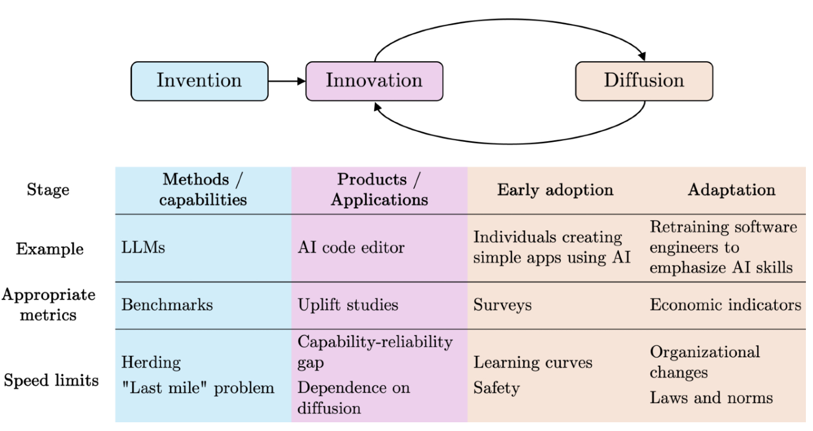
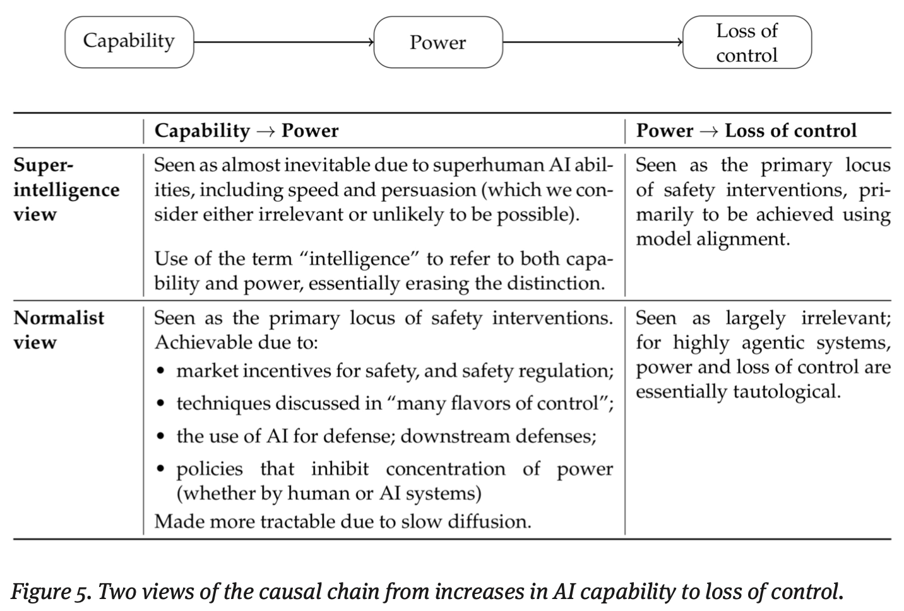
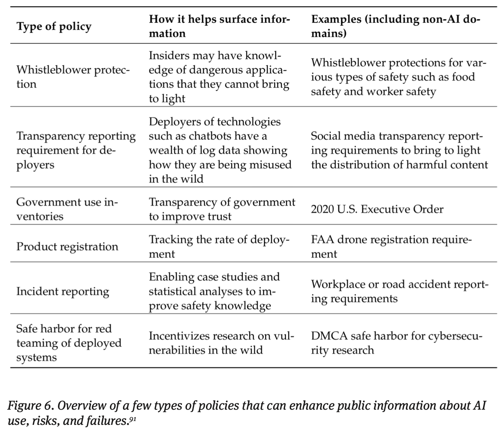

- Article: AI as Normal Technology
- Presenter: Ivan Perez Avellaneda
- Attendees: Anil Kamat, Athula Pudhiyidath, Hongsup Shin
Why This Paper
As ML practitioners, we often find ourselves caught between two exhausting extremes: on one side, breathless hype about AI solving everything, and on the other, existential dread about superintelligence destroying humanity. Neither perspective helps us navigate the real challenges we face daily—deploying models responsibly, understanding their limitations, and communicating realistic expectations to stakeholders.
This article cuts through the noise by suggesting we treat AI like any other transformative technology we’ve dealt with before. We wanted to discuss it because it validates what many of us have been feeling: that the most pressing issues aren’t about preventing AGI apocalypse, but about thoughtful deployment, institutional safeguards, and closing the gap between what models can do in benchmarks versus what they can actually accomplish in production. It offers a framework for having the grounded, practical conversations about AI policy and safety that are realistic and clear-eyed.
Paper Summary
Narayanan and Kapoor propose viewing AI as “normal technology” rather than a potential superintelligence—a tool that humans can and should remain in control of, without requiring drastic policy interventions or technical breakthroughs.
Part 1: The Speed of AI Transformation

In Part 1, the authors argue that AI’s societal impact will be gradual, not sudden. They distinguish between three phases: invention (model development), innovation (practical applications), and diffusion (widespread adoption). While AI research produces new models rapidly, the authors remind us that this does not mean translation to real-world utility. For instance, infrastructure and organizational inertia create substantial barriers, as implementing AI requires changes to existing systems, training, and workflows. This is especially true for high-risk areas.
Besides, there exists a capability-reliability gap where impressive benchmark performance doesn’t guarantee real-world utility—what they call a problem of “construct validity.” This gap is particularly pronounced in safety-critical applications, which face slow adoption due to regulatory requirements and risk aversion.
The research community itself may be slowing innovation through what the authors describe as “ossification of canon”—a phenomenon where the proliferation of AI publications has led researchers to pile onto existing approaches rather than pursue genuine innovation. The paper notes that even transformative technologies like electricity took decades to reshape manufacturing, with Paul A. David’s 1990 paper quoting economist Robert Solow that computers were everywhere except in productivity statistics. This historical pattern suggests AI will follow a similar trajectory of gradual integration rather than sudden transformation.
Part 2: Intelligence vs. Control

The authors make a critical distinction between intelligence and control over the environment. They challenge the superintelligence narrative by arguing that intelligence alone doesn’t automatically translate to power or control. They suggest that AI will likely not achieve meaningful superiority in crucial domains like geopolitical forecasting or mass persuasion, areas where human judgment and contextual understanding remain essential. This reframing implies that the focus should shift from model alignment research to system safety, which emphasizes preventing accidents and misuse through well-established engineering approaches.
The authors’ argument on alignment research as fundamentally misconceived is well represented in their quote: “trying to make a computer that cannot be used for bad things.” The alignment framing assumes AI systems will operate autonomously in high-stakes situations, which contradicts how safety-critical systems are actually deployed in practice. Instead of seeking to solve alignment as an abstract problem, the authors argue for treating AI safety like cybersecurity—a continuous process of identifying and mitigating specific vulnerabilities rather than seeking a final solution.
Part 3: AI Risks Landscape
Rather than focusing on speculative catastrophic misalignment, the authors identify more immediate and concrete risks. In examining accidents and arms races, they note that different domains have fundamentally different safety dynamics. Aviation and self-driving cars demonstrate how market incentives can potentially align with safety when harm attribution is clear and liability is established. Social media, by contrast, shows what happens when this is not the case. Regarding the arms races between countries, particularly between the U.S. and China, the authors clarify that the focuses of the competition have been more on model development capabilities than deployment.
Regarding misuse, the authors argue that primary defenses must be located downstream of models—at the point of application rather than in the models themselves. They emphasize that AI can also be used defensively against threats, creating a more complex security landscape than simple misuse scenarios suggest. However, they identify systemic risks as the most pressing concern, including the entrenchment of bias and discrimination, labor market disruption in specific sectors, increasing inequality and concentration of power, pollution of the information ecosystem, erosion of democratic institutions, and the enabling of authoritarianism. These risks have been consistent problems back in traditional ML days (pre-generative AI), and they can be aggravated by AI. Finally, they argue that these are more likely to materialize than speculative extinction scenarios.
Part 4: Resilience Over Restriction

The authors advocate for a resilience-based policy framework rather than restrictive preemptive regulation (e.g., nonproliferation). They define resilience as “the capacity of a system to deal with harm,” which recognizes that “changes are inevitable in complex systems, and tries to manage and adapt to that change in ways that protect and preserve the core values and functions of the original system.”
They argue that AI risk probabilities lack meaningful epistemic foundations, unlike actuarial data used for insurance pricing, making probability-based policy interventions problematic. In this sense, their approach emphasizes reducing uncertainty through strategic research funding focused on downstream risks rather than abstract capability improvements, developing robust risk monitoring systems, and treating evidence gathering as a primary goal rather than a preliminary step.
This resilience framework operates across four categories:
- Societal resilience that protects democratic institutions and civil society
- Prerequisites for effective defenses including technical and policy capabilities
- Generally beneficial interventions that help regardless of AI’s trajectory, and
- Normal-technology-specific measures that assume AI remains under human control.
The authors firmly argue that nonproliferation of AI technology is infeasible and likely counterproductive. Instead, policy should focus on enabling beneficial diffusion through thoughtful regulation, promoting AI literacy across society, and supporting digitization and open government data initiatives that enable broader participation in the AI ecosystem.
Discussion
As a group, we all thought this paper presented several thought-provoking arguments that provide realistic and critical perspectives that pierce through the AI hype.
Gradual Ceding of Control
On the question of control, some of us expressed concern that we may already be on our way to ceding control gradually to AI systems even as the authors argue for maintaining human oversight. While the paper presents various control mechanisms—from auditing to circuit breakers—there’s a troubling sense that each new capability we delegate to AI represents a small surrender of human agency. The authors frame this as manageable through proper governance structures, but we wondered whether this incremental handover might create dependencies that become increasingly difficult to reverse, even if the technology remains “normal” rather than superintelligent. A good example would be AI companies getting actively involved in higher education for adoption.
Limitations in Forecasting and Persuasion
However, we did not completely agree on the paper’s confidence about AI’s limitations in forecasting and persuasion. The authors predict that AI won’t meaningfully outperform humans at geopolitical forecasting, but we thought the authors did not provide enough explanation on why. More concerning was the persuasion argument—while the authors carefully qualify their prediction to focus on persuading people “against their self-interest,” recent incidents involving AI chatbots and vulnerable individuals, particularly teenagers, suggest that AI systems may already possess concerning persuasive capabilities in specific contexts. The paper’s distinction between costless persuasion tests and real-world scenarios with meaningful stakes is valid, but we felt it might underestimate the vulnerability of certain populations and the subtler forms of influence that don’t require dramatic against-interest actions.
Omission of Military AI
A notable omission that troubled us was the near-complete absence of military AI applications from the paper’s analysis. While the authors briefly touch on arms races in the context of model development competition between nations, they largely sidestep the reality of autonomous weapons systems and military AI deployment. This feels like a significant gap, particularly given that military AI operates under fundamentally different constraints than civilian applications—with inherent opacity, limited oversight mechanisms, and incentives that may actively resist the “normal technology” framework.
The literal arms race in lethal autonomous weapons systems presents exactly the kind of scenario where human control could be rapidly eroded and safety measures would be easily compromised, not through superintelligence but through competitive pressures. While we understand that military AI might deserve its own separate treatment, we think excluding it entirely weakens the paper’s argument that we can maintain meaningful human control through institutional and regulatory mechanisms.
The Alignment Distraction
Despite these reservations, we found the paper’s reframing of AI safety particularly compelling. The authors make an excellent point that the intense focus on model alignment has diverted attention from more immediate harms like the erosion of democratic institutions, entrenched discrimination, and labor displacement. This critique resonates strongly with our experience as practitioners who see these concrete issues manifesting today while policy discussions on ML fairness and AI safety still fall behind the advancements in tech industry.
Interestingly, our group was split on whether the paper’s tone was optimistic or pessimistic. Some saw it as sobering in its catalog of potential harms, while others found it refreshingly empowering in its assertion that we still have agency to shape AI’s trajectory. Perhaps this divergence itself validates the paper’s central thesis: by moving away from binary utopian or dystopian narratives, we can have more nuanced, productive conversations about AI governance. The paper provides a valuable framework for cutting through the exhausting cycle of hype and doom that dominates AI discourse, offering instead a pragmatic path forward based on historical precedent and institutional resilience.
If you found this post useful, you can cite it as:
@article{
austinmljc-2025-ai-normal-tech,
author = {Hongsup Shin},
title = {AI as Normal Technology},
year = {2025},
month = {10},
day = {23},
howpublished = {\url{https://austinmljournalclub.github.io}},
journal = {Austin ML Journal Club},
url = {https://austinmljournalclub.github.io/posts/20251023_ai_normal_tech/},
}